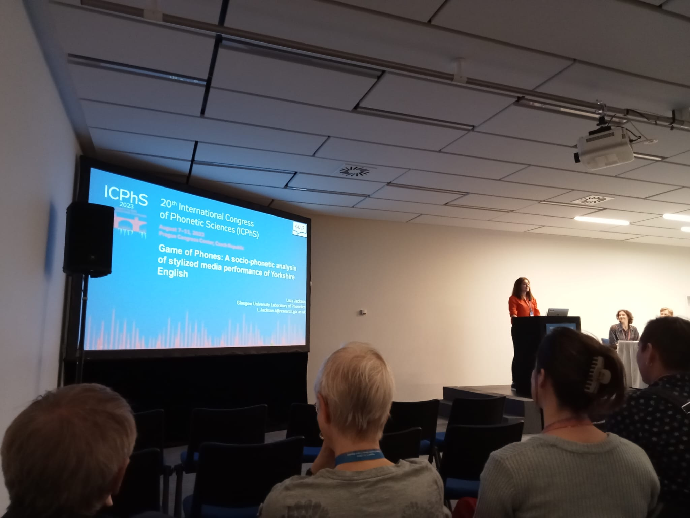

Research
Here is a brief summary of my research projects, current and past. I have designed it in a way that is accessible to both linguists and non-linguists.
For more information, please don’t hesitate to get in touch!

Accentuating Identities
For part of my PhD research, I am interested in how accents are used in the media. Accents can be used to build character identities, by allowing us to rely on social stereotypes present in society. Using accents and language varieties can be a useful technique to cultivate these fictional worlds, but it can lead to accent bias and accent-based stereotyping in society.
To look at how accents are portrayed in the media, I have conducted a quantitative content analysis which focuses on the Glaswegian vernacular (GV) accent.

We analysed 5825 data points from 233 characters across 12 films, evaluating characters on 25 social and behavioural traits. The results show that GV speakers are downgraded in competence but upgraded in warmth, mirroring existing research on vernacular speakers. To have a look at the portrayals even further, data modelling took place to look at the predicted probability of a character’s portrayal, based on their accent. Let’s have a look at profanity use with the below (very pretty, and very colourful figure).

We can see a big difference between accent groups and associated profanity use. GV speakers are portrayed as extreme profanity users compared to those with Received Pronunciation or Standard Scottish English accents, who show minimal swearing.
Probabilistic ordinal logistic regression models were employed to analyse any significant effect of accent on attribute ratings of characters in the film dataset. Significant differences were found in Glaswegian Vernacular portrayals compared to standard Scottish (SSE, GSE) and English (SSBE, RP) accents. The GV accent differed significantly with portrayals of aggression, profanity use (extremely high use) and competence-based traits such as authority and intelligence (GV speakers are downgraded).
So, what does all this mean? We know that accents are a salient tool in creating fictional worlds, and we might even argue that accent-based stereotypes are part and parcel of the nature of depicting society. But, does this reliance on the social information imbued in accents further reinforce our biases and stereotypes?
That’s what I will be looking at next, when using eye-tracking techniques to investigate media influence on the real-time social associations of speech and speakers.
I presented this research at BAAP2024, March 2024. For further details on this research, including videos and methods click here.
A Game of Phones

For my Masters dissertation, I conducted a socio-phonetic analysis of Yorkshire English in Game of Thrones and presented my findings at the International Congress of Phonetic Sciences 2023.
Accents in media, like Game of Thrones, provide quick cues for audiences to understand characters and social hierarchies, often mapping real-world stereotypes onto fictional worlds. For example, the prestigious Lannister family speak in Received Pronunciation (RP), which we associate with royalty.

To look at mediated accent portrayals of the Yorkshire accent, I analysed three characters’ Yorkshire performances in Game of Thrones: native Yorkshire speaker Sean Bean and non-native speakers Kit Harrington and Richard Madden. Using acoustic analysis, I examined the following Yorkshire accent features: STRUT-FOOT vowel merger and monophthongal variants of GOAT & FACE vowels.

(Jackson, 2023)
| In most Yorkshire accents, the STRUT and FOOT vowels [ʌ-ʊ] are merged. As a Yorkshire lass myself, I would say both these words with the exact same vowel as they are merged for me. Similarly, you can see these vowels merged by the Sheffield actor, Sean Bean (SB). However, the non-native actors (KH and RM) fail to produce a STRUT-FOOT merger in their Yorkshire performances. |
| Moving on to the monophthongal FACE and GOAT variants [eɪ, əʊ] in the Yorkshire accent, rather that the common diphthongal quality we hear in most other UK English accents. We can see that Sean Bean (SB) demonstrates minimal movements across the vowel trajectory (25%, 50% and 75% point of the vowel), making his FACE and GOAT vowels very monophthongal (as expected). Unfortunately, the non-native actors seem to really struggle with this, and can’t seem to shake the extra movement we would see in their own native accents. |
 FACE vowel - (Jackson, 2023) FACE vowel - (Jackson, 2023) |
 GOAT vowel - (Jackson, 2023) GOAT vowel - (Jackson, 2023) |
| We can see from above that the non-native speakers are struggling to consistently replicate Yorkshire features similar to what is expected in native Yorkshire speech. The second part of this study asked lay listeners (not phonetically trained) to ‘blindly’ rate these performances. Listeners rated Sean as the most credible Yorkshire speaker, while Kit and Richard were rated less favourably, with listeners using these performances to predict their true origins. |
An interesting add-on was that listeners were then asked to predict what these Yorkshire voices would look like. Descriptions such as savage, dirty, a bit dim but loyal were all given. Which, interestingly, corresponds to the overall appearance of the Starks family, as the dishevelled, Northern underdogs.
In short, non-native speakers failed to consistently produce Yorkshire phonetic features, and listeners picked up on these discrepancies, linking them to the speakers’ actual origins. Listeners were also found to use the phonetic signal (the accent) to make predictions about the speakers’ social behaviours and appearances. This raises questions about the reinforcement of stereotypes through media portrayals of accents.
And perhaps, we are all just playing the game of phones to decipher social meaning through language.

Upcoming projects…
Pssst… There’s a few more things I’m working on in the background. I’ll have them posted up here very soon.